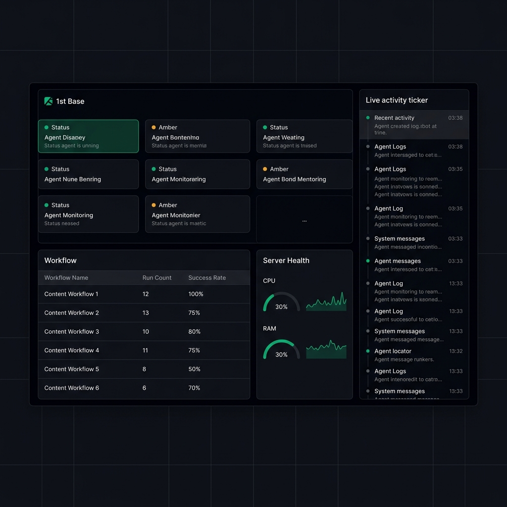
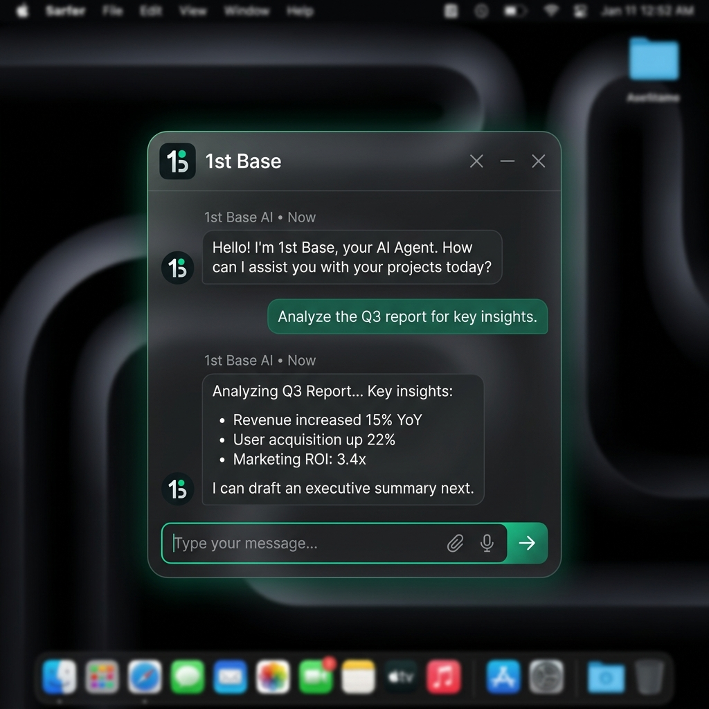

Run, monitor, and step into your automations whenever you need. From background workflows to live tasks — you're always in control.

1st Base gives you a live view of your agents, your workflows, and your system health — all in one place. No guessing what's running. No digging through logs.
Everything you need to run agents like a system — not a black box. Watch logs and progress as it happens.
Full support for cron jobs and event-driven triggers to execute background tasks reliably.
Stop workflow failures immediately with push notifications the second an agent hallucinates or errors out.
Drop into screen share workflows so your agent sees your IDE, or enable webcam for Gemini Live voice collaboration.
You don't just launch agents. You actually manage them.
The 1st Base floating widget sits on your desktop so you can check in, respond, or redirect without breaking your flow.

Plug into your OpenClaw setup and bring everything into one control layer. No complicated setup, just connect and go.
See what's happening in real time: logs updating live, task progress, and system health status. If something breaks, you'll know immediately.
Take control when it matters. Send messages mid-task, use voice to guide execution, and share your screen to give agents context.
With Gemini Live integration, you can:
No prompts. No friction. Just interaction.
If you're using tools like n8n, Lindy, or custom agents — this is the layer that ties it all together.
1st Base isn't another automation tool.
It's the control system for the ones you already have.